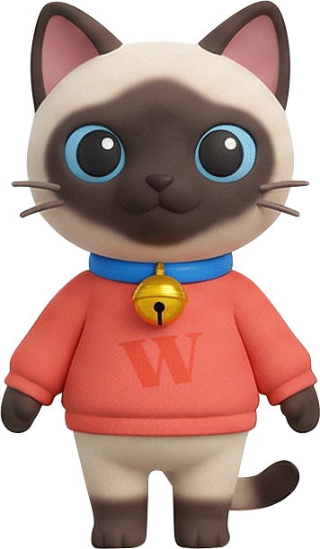
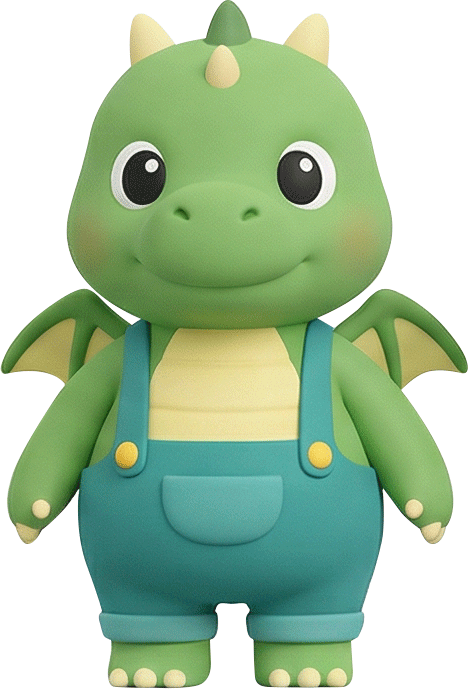

05 — The Buddy System
Six companions. One becomes your child's guide.
At the very start, your child chooses a buddy. That choice isn't cosmetic. The buddy becomes a constant, personality-consistent presence — walking the world map ahead of them, cheering a hard-won character, appearing at every meaningful moment. Not a mascot that rotates at random, but their companion for the whole journey.

Líng líng · cat
The Heart
Warm, comforting, unifying — the one who steadies a wobble.

Míng míng · owl
The Sage
Measured and knowledgeable, a little formal — the explainer.

Fēng fēng · cheetah
The Trickster
Chaotic good and quick — comic relief that keeps it light.

Yǒng yǒng · axolotl
The Champion
Analytical and action-oriented — the problem-solver.
Qí qí · red panda
The Explorer
Kinetic and wonder-driven — always rushing toward what's next.

Mèng mèng · dragon
The Dreamer
Innocent and sensory — accidentally insightful in the best way.
One source of truth answers a single question.
Behind every screen that shows a buddy is the same question: given this child's chosen companion, who should appear here? Whether it's the figure walking the map, the face on a celebration, or the cheer after a flawless write — it's always their buddy, in character, never hardcoded or mismatched. Choose Qí, and Qí is with you everywhere.